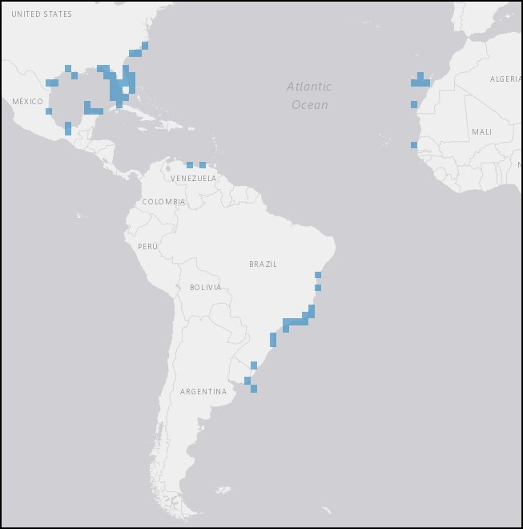

The whaling ship rounded Cape Horn in February, 1861, and made its way north along the east coast of South America, sailing the same waters where the great hairy triton can be found.

More information on the taxa and distribution of Monoplex parthenopeus is available through OBIS Mapper here.